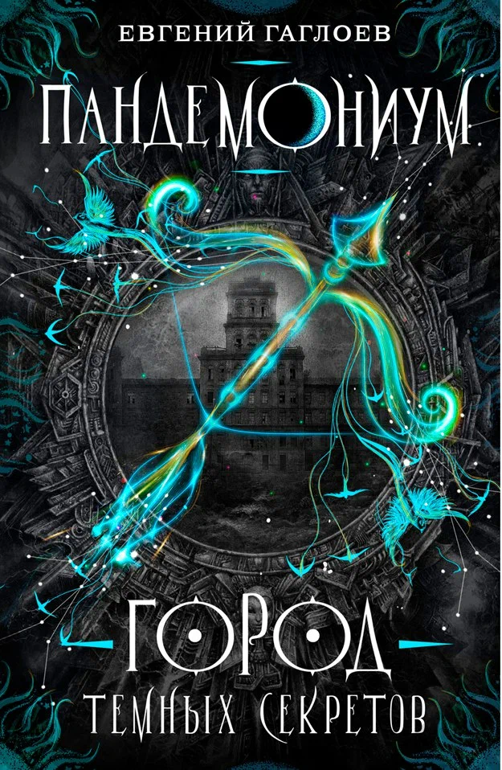
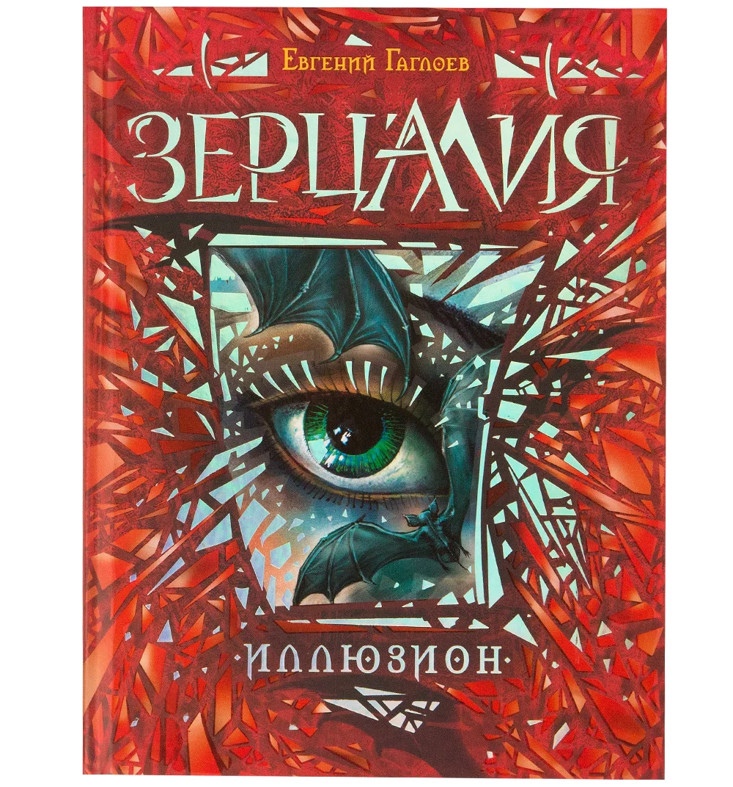

Сейчас мы окунёмся в мир магии.А книги в которую мы окунёмся называется Пандемониум и Зерцалия.В этих книгах герои будут стречатся то в одной книге то в другой.В Панемониуме 1 книге наш главный герой Тимофей Зверев сын кино звезды.Но это мы узнём потом,а в начале книги показывают плохую сторону героя,а если прямо то Тимофей вор одной банды кантрабандистов.Но потом после одной миссии случилась не удача и его хотели посадить в тюрьму.Но приёмный отец Тимофея помог ему, но Тимофею пришлось поехать в закрытую академию.Где он узнал что унего есть волшебные способности.А что сним произашло в академии и каких врагов он там нашёл.Смотрите в торую страницу или читайте книги про Пандемониум.
 